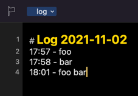

using the ‘dlog’ keyword to trigger appending to a daily log via Alfred 4 and Stephen’s excellent Dr Drafts / Thought Asylum library. Upgraded to Monterrey today (not sure if it’s significant) and now calling the same keyword causes Drafts to keep creating new notes - I have to quit Alfred to stop it happening.
I’m assuming the issue is with the Alfred workflow but not sure why it’s suddenly started happening?
Has anybody else had similar issues?
The other keywords don’t have the same problem - just ‘dlog’
I’ve tried it, but I wasn’t able to reproduce what you seem to be getting.
I ran it three times, a minute or two apart and got the expected output.

I’m running the following.
Drafts Information
Version: 29.1.1
Pro Subscription Enabled: true
Alfred Information
Version: 4.6 [1266]
Powerpack Enabled: true
Doctor Drafts Information
Version: 1.5.1
Device Information
Model: Mac
OS Version: Version 12.0.1 (Build 21A559)
System Name: macOS
Maybe check what you are running - though some of the above may well be beta versions, though not the OS?
Please note Doctor Drafts does not utilise the ThoughtAsylum Library for Drafts; you should only be using the former in the workflow if you have recreated the use case for the log creation.
Can you share a copy of your workflow as you have entered it? Then we can try and reproduce it using exactly what you have.
Have you tried recreating the workflow from scratch? Perhaps something has been corrupted?
But, I guess this can also go both ways. Here’s an export of the workflow. This is what still works for me. If you import it (disable/change the trigger on your existing workflow), does it work for you?
Please do review the workflow before you run it to ensure that it looks safe to run on your machine.
Hi - your’s also does the exact same thing … ran some logs and the external trigger is being called once and at that point it goes haywire with multiple drafts being created (non with the content I entered)
Should I reinstall the python bits or would that not be it?
It certainly seems to be something local to you. No other reports from other users. My working version and your previously working version both generate the same spurious result. It is not happening for any other flows.
Deleted the workflow, reinstalled 1.5.1 again. It also happens when I create the ‘daily pasteboard’ flow - I get lots of drafts created and it keeps looping until I close Alfred.
Reinstalled Python - will try reinstalling Drafts although I did that already.